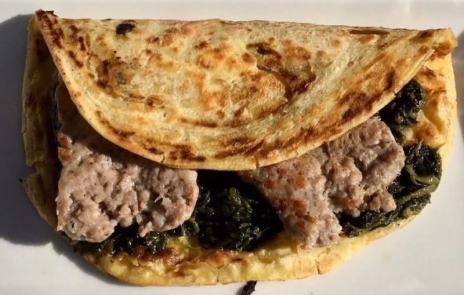
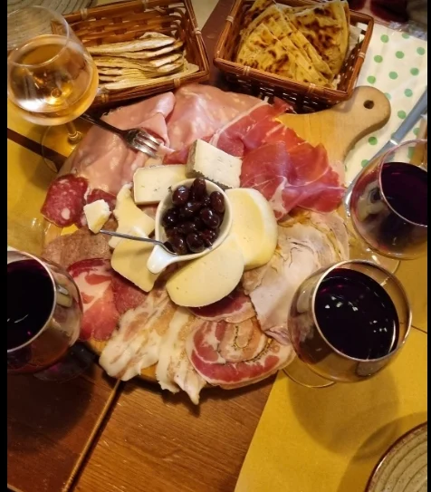
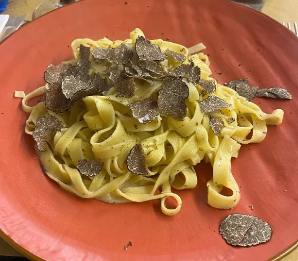

La crescia
Dorata, fragrante, da gustare un morso alla volta.
La crescia, i sapori della tradizione, un calice di vino. Il piacere di fermarsi e stare bene a tavola.
Via Puccinotti 21, Urbino · Come arrivare ↗

Dorata, fragrante, da gustare un morso alla volta.
Un tagliere al centro del tavolo e il piacere di stare insieme.

La tradizione incontra i profumi delle nostre terre.
Nel centro storico di Urbino, il nostro invito è semplice: prenditi un momento, scegli qualcosa di buono e lasciati accompagnare dai sapori della tavola.
Vieni a trovarci ↗Per un pranzo, una cena o una pausa durante la tua visita a Urbino.
Chiama per prenotare ↗